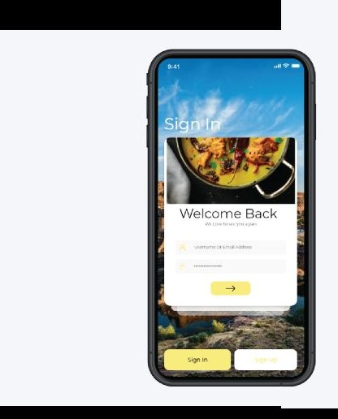
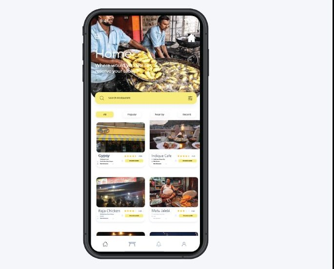
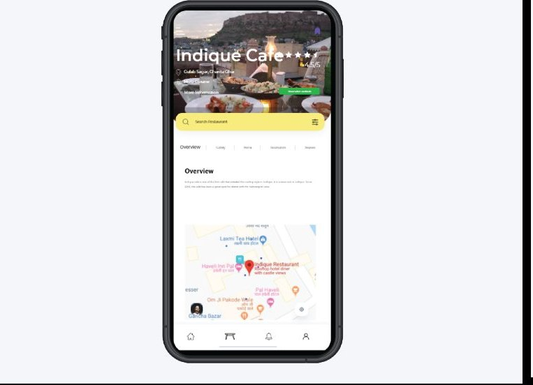
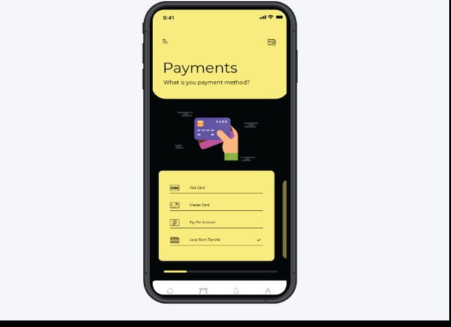
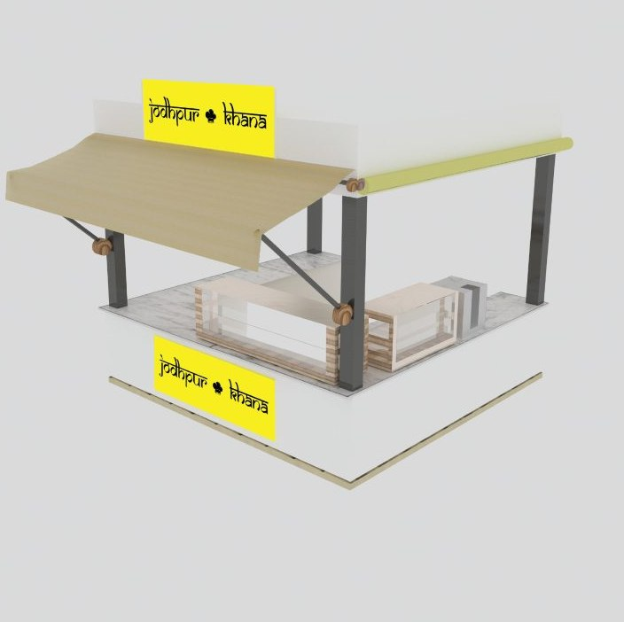
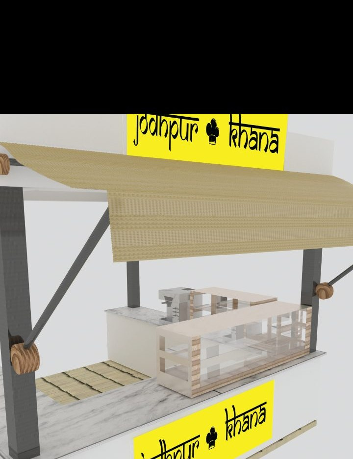
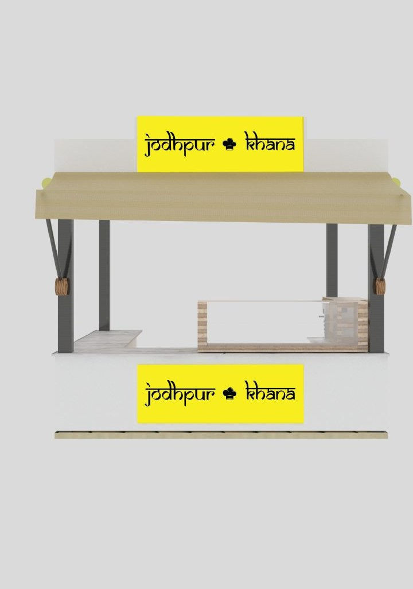

Jodhpur
Khana
Jodhpur Khana is an initiative to attract tourists to new, authentic cuisine and local dishes of Jodhpur — designed to direct customers to a mobile application that helps them locate these specialities, while providing relevant functionality for local sellers.
An app for finding the vendor, and a stall that points back to it.
Jodhpur Khana directs visitors to the city’s authentic local dishes — and to the informal street vendors who actually make them. The app handles discovery, listings, maps and payments; a modular pop-up stall gives the initiative a presence on the street that an app alone cannot have.
Four screens, each doing one job.




A modular cart, and the standee that joins the two halves.



The standee carries the mark at street scale and a QR code that opens the app — so a tourist who walks past a stall ends up holding the directory.